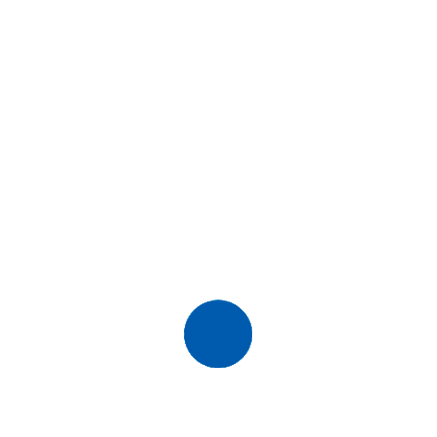

Kaique Ferreira Batista
Desenvolvedor Frontend Júnior
-

- 
Sobre
Oi! Meu nome é Kaique Ferreira Batista, seja bem-vindo(a)
Conheci a programação com meus 18 anos através do meu irmão mais velho. Depois de ver muitas vezes ele estudando para ser programador e entrar no mercado me despertou essa curiosidade de saber o que era a programação e quando vi logo me apaixonei e sabia que era oque eu queria, atualmente comecei a colocar esse sonho em prática estudando HTML, CSS e JavaScript. Gosto muito de Jogos e fotografia diria que seria mais um Hobbie, Gosto também de animes e series, eu gosto de aprender coisas novas e ler sobre a filosofia, sou apaixonado por video game, eu tinha a vontade de ser programador de jogos mas depois de conhecer a área de Desenvolvedor de Web eu gostei pra caramba.